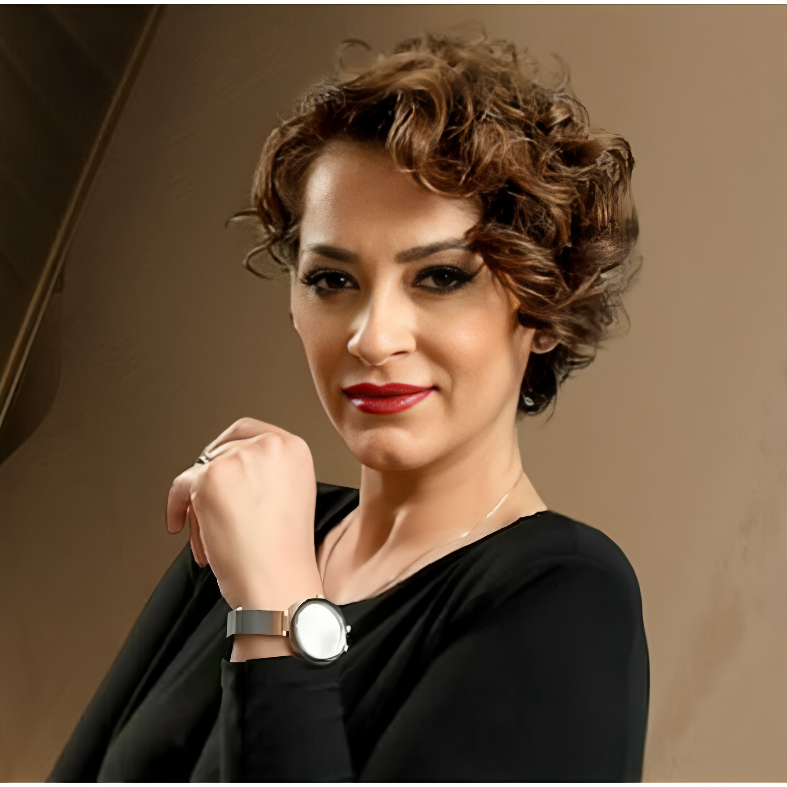
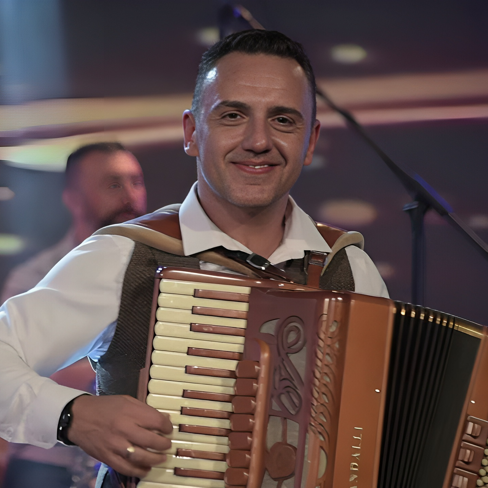
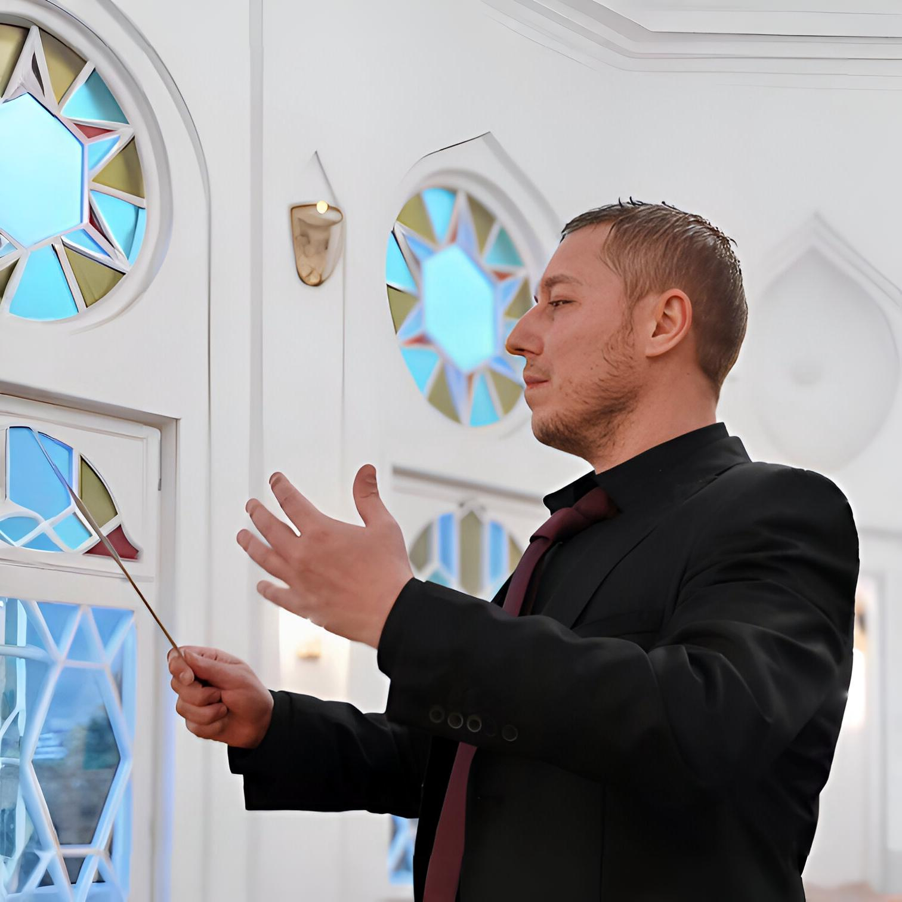

WiKi
ANETA BAND

ANETA LJUMAKOVSKA
Aneta Ljumakovska was born on 25.07.1983 in Bitola and is a famous Macedonian singer and one of the most recognizable performers of folk and newly composed music in Macedonia and the region. She graduated from a technical high school in her hometown. From a young age, she showed a strong interest and talent for music. With her specific voice, emotional interpretation and authentic style, Aneta quickly won the attention of the audience and received countless awards at festivals both in Macedonia and in the neighboring countries. As a former member of "Molika", she has performed at numerous concerts, festivals, and cultural events, both in the country and in the diaspora. During her career, she has performed a number of hits that are well received by the audience and are often part of the Macedonian folk scene. Aneta is now part of the Aneta Band together with some of the members of "Molika" and is appreciated for her professionalism, modesty and dedication to music.
STIV SHTUREVSKI
Stiv Shturevski, Macedonian singer, composer, arranger and actor. Born on 22-1-1975 in Ohrid, Republic of Macedonia. Completed secondary technical education. He comes from a large musical family, so from the youngest age he is completely devoted to music as a harmonica player, synthesizer and mainly vocals. He was a member of many Macedonian music groups, such as "Group Fontana" and "Group Molika". After a long career, he temporarily retired from the profession in 2016. Now again to be an active member of one of the best Macedonian folk groups "Aneta Band". He has performed all over the world, including America, Australia, Canada and most of Europe. He is known for the music hits "Ajshe", "Lichno Nade", "Sela Pelisterski" and many others.
RUBIN RAZMOVSKI
Rubin Razmoski was born on 19.09.1982 in Prilep. He is a prominent Macedonian musician who is recognizable by his wind instruments with which he began to cultivate the tradition as a young member of KUD Mirce Acev from Prilep. Razmoski has established himself as a top instrumentalist, known for his technical skills and authentic interpretation of Macedonian folk and newly composed music. As a former member of "Molika", Rubin has performed at numerous concerts and festivals worldwide. As a member of Aneta Band, his role in the group is crucial, both on stage and behind it.

ALEKSANDAR (KARMATA) TALEVSKI
Aleksandar Talevski Karma is a Macedonian musician from Bitola, born on May 13, 1981. His specialty is percussion instruments – drums, tarabuka and village drum, through which he creates a recognizable and authentic rhythm. He spends the most significant part of his career in the legendary group „Molika“, where he has been an active member since 2007. During his career, Alexander performed in Australia, the USA, Canada and throughout Europe. Today he is an active member of „Aneta Band“, where he continues to enrich the Macedonian music scene with his talent and experience.

ZISO PUROVSKI
Ziso Purovski was born in 1975 in Bitola. He completed his secondary education in 1994 at the secondary music school in Bitola and graduated from the Faculty of Music in 1998 in Skopje. As a cellist, he was a founder of the contemporary music ensemble “Alea” and the string quartet “ARKO”, with which he performed numerous concerts across Europe. He currently works as a full professor of cello at the secondary music school in Bitola while performing as a key member of Aneta Band.

VANGEL MAZHEVSKI
Born on January 20, 1986, in Bitola. He graduated from the Faculty of Music in Skopje, Department of Music Theory and Pedagogy. Since 2013, he has served as a professor of harmony and composition. He is professionally engaged in audio production, mixing, and mastering, and has collaborated extensively with the Bitola Chamber Orchestra as an arranger and performer. At the beginning of 2024, he premiered his composition “Variations on the theme Macedonian girl” for piano.
JANE DINEV
Jane Dinev was born on March 8, 1999 in Kavadarci. He started his musical journey at the age of 18 and became known to the wider audience through performances on music television shows. His musicality is complemented by knowledge of accordion and synthesizer. Jane Dinev is considered one of the young musicians with great potential on the Macedonian scene and continues his professional journey as a member of Aneta Band.